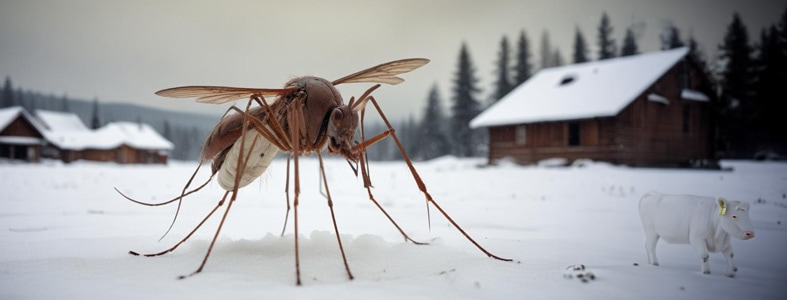

Участились нападения комаров на скот
Власти просят жителей деревни не оставлять непривязанную скотину на открытых пространствах, чтобы комары не уносили животных в лес. Читать далее
Главный новостной портал д. Упоровка
Кемеровской области.
Власти просят жителей деревни не оставлять непривязанную скотину на открытых пространствах, чтобы комары не уносили животных в лес. Читать далее
В понедельник 21 октября состоится ежегодный фестиваль огурца. По традиции, победитель конкурса на лучший костюм будет назначен главой Упоровского района на следующий год. Читать далее
Известный упоровец Егор Петрович Федотов продолжает радовать жителей деревни новыми достижениями в селекции. Читать далее
Оператор UporovoStar принимает заявки на установку обновленных антенн для приема центральных каналов телевидения. В новых более компактных антеннах устранили помехи от реликтового излучения. Читать далее
Отдых на природе - прекрасный способ отдохнуть от ещежневной рутины. Мы подобрали ТОП-5 мест для отдыха всей семьей в нашем районе. Читать далее